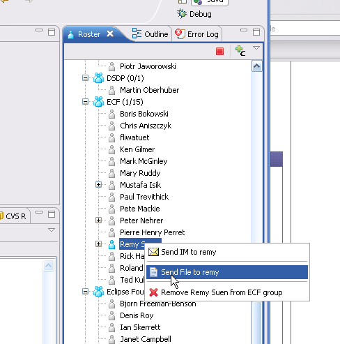

New ECF Providers for MSN and Bittorrent Protocol Support |
|
MSN Provider
|
MSN Messenger provider added to support ECF-based instant message and presence via MSN Messenger Accounts.

|
|
Bittorrent Provider
|
Bittorrent provider added for file retrieval.
|
|
Feature Additions |
|
Peer-to-Peer File Transfer for XMPP Accounts
|
Peer-to-peer file transfer (using the ECF file transfer API) was added for XMPP accounts.

|
|
API Enhancements |
|
Instant Messaging History API
|
Added history API for accessing chat history information. See bug #177014
for details.
|
|
Chat Robot API
|
Added robot API and extension points for creating robots that can chat via IM or chat rooms. See bug 180078
for details. This API allows robots to be defined via two new extension points in the new plugin org.eclipse.ecf.presence.bot.
For example, here's the definition of an imrobot 'Fliwatuet' that will connect to the account at fliwatuet@ecf.eclipse.org and
then receive messages and notifications via the imcommand handler class org.eclipse.ecf.presence.bot.DefaultIMMessageHandler:
<extension
point="org.eclipse.ecf.presence.bot.imRobot">
<imRobot
connectId="fliwatuet@ecf.eclipse.org"
containerFactoryName="ecf.xmpp.smack"
id="org.eclipse.ecf.presence.imbot"
connectPassword="password"/>
</imRobot>
</extension>
<extension
point="org.eclipse.ecf.presence.bot.imMessageHandler">
<handler
imRobotId="org.eclipse.ecf.presence.imbot"
class="org.eclipse.ecf.presence.imbot.MyIMMessageHandler">
</handler>
</extension>
Here's an example for use of the chatroomrobot extension point for connecting to an IRC channel:
<extension
point="org.eclipse.ecf.presence.bot.chatRoomRobot">
<chatRoomRobot
chatRoom="#eclipse-ecf"
connectId="irc://slewis2_@irc.freenode.net"
containerFactoryName="ecf.irc.irclib"
id="org.eclipse.ecf.presence.bot.ircbot">
</chatRoomRobot>
</extension>
<extension
point="org.eclipse.ecf.presence.bot.chatRoomMessageHandler">
<handler
chatRoomRobotId="org.eclipse.ecf.presence.bot.ircbot"
class="org.eclipse.ecf.presence.bot.MyChatRoomMessageHandler">
</handler>
</extension>
See also the Bot Framework tutorial.
|
|
Discovery API Simplification
|
Small simplifications to the discovery API. For example, removed some methods from IDiscoveryContainerAdapter.
|
|
Support for All Equinox-based Runtimes
|
Removed references to packages and classes that are Eclipse-based. For details see
bug #176322. With this change, all non-ui ECF
bundles (i.e. those whose name does not end with *.ui) are able to operate in all Equinox configurations...e.g.
servers, RCP apps, eRCP, and/or Eclipse.
|